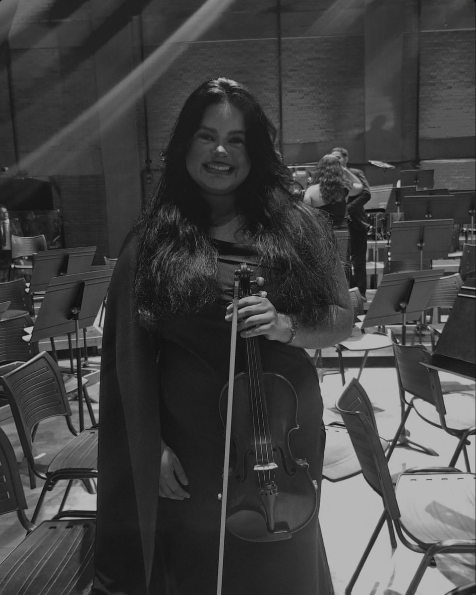

Aula individual
Uma hora só sua, presencial em Goiânia. O plano é montado a partir do que você quer tocar, não de uma apostila padrão.
Semanal ou quinzenal
Goiânia · presencial e online
Você não precisa saber nada de música para começar. Eu te ensino a segurar o arco, tirar o primeiro som limpo e chegar até a sua primeira peça inteira — no seu ritmo, sem pressa e sem vergonha de errar.

hadassa-hero.jpg
hadassa-sobre.jpg
Quem ensina
Todo mundo que hoje toca bem já foi alguém segurando o violino errado na primeira aula.
Sou Hadassa Sara, licenciada em Música pela UFG e integrante da Orquestra Sinfônica Jovem de Goiás. Divido meu tempo entre o palco, os ensaios e as aulas — e é nas aulas que eu mais gosto de estar.
Dou aula para adultos que sempre quiseram tocar e nunca tiveram tempo, para crianças começando agora e para quem já arranhou alguma coisa sozinho e quer corrigir o caminho. Cada aula é montada para uma pessoa só: a sua.
Hadassa Sara
Sol · Ré · Lá · Mi
Da corda mais grave à mais aguda, cada etapa abre a próxima. Você avança quando o som está pronto — não quando o calendário manda.
A primeira corda é a mais grossa e a mais grave — é por onde tudo começa. Aqui a gente resolve o que trava quase todo iniciante: o corpo.
Os dedos chegam ao espelho e o violino começa a falar. É a etapa em que aparece a primeira música reconhecível — e é aqui que a maioria se apaixona.
Você deixa de depender de vídeo e passa a ler o que quiser tocar. Leitura entra devagar, sempre ligada ao instrumento — nunca como teoria solta.
A corda mais aguda é a que canta. Nesta etapa o objetivo deixa de ser acertar as notas e passa a ser dizer alguma coisa com elas.
Formatos
Uma hora só sua, presencial em Goiânia. O plano é montado a partir do que você quer tocar, não de uma apostila padrão.
Semanal ou quinzenal
Mesmo conteúdo, por chamada de vídeo, para quem mora longe ou tem agenda apertada. Você recebe o registro do que foi visto e o que praticar na semana.
De qualquer cidade
Aulas mais curtas, com jogos rítmicos e metas pequenas. O foco é criar o hábito de estudar sem que vire obrigação.
A partir dos 7 anos
Para quem já tocou, parou e quer voltar — ou aprendeu sozinho e desconfia que pegou vício. A gente arruma a base e segue em frente.
Diagnóstico na 1ª aula
Ainda não tem violino? Não compre nada antes de falar comigo. Te ajudo a escolher o primeiro instrumento pelo que você realmente precisa — e te digo o que dá para deixar para depois.
Violino ao vivo
Cerimônias, recepções e eventos com violino ao vivo, sozinha ou com outros músicos. Repertório escolhido junto com você — do clássico ao que toca no rádio.
hadassa-evento.jpg
Quem já estuda
Comecei achando que era tarde demais para aprender. Três meses depois toquei uma música inteira para a minha família.Aluna adulta · iniciante
Minha filha tinha vergonha de tocar na frente dos outros. Hoje ela pede para mostrar o que aprendeu.Mãe de aluna · 9 anos
Eu tinha aprendido sozinho por vídeo e travei. A Hadassa desmontou tudo o que estava errado com paciência e eu voltei a evoluir.Aluno · retomada
Contato
Responda três coisas rápidas e o WhatsApp abre com a mensagem pronta. Se preferir, é só chamar direto.
Escreva seu nome para eu saber com quem estou falando.
Nada é enviado por aqui — o site só abre o WhatsApp com o texto pronto.